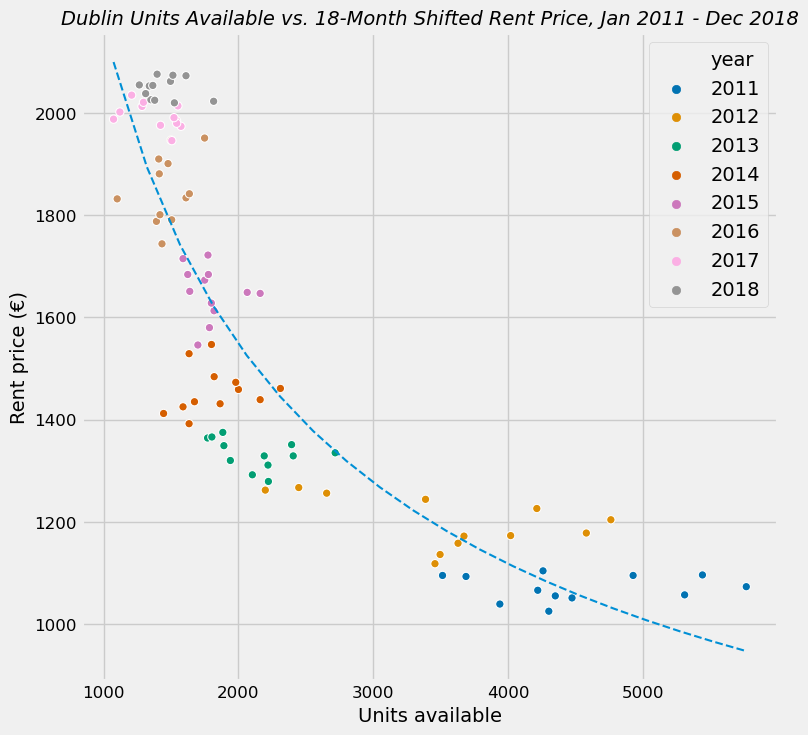

We noticed a strong relationship between unit availability and rent price if you shift rent price by 18 months - could be a lag reaction
of pricing to how many units are on the market at a given time. There's an equation to the curve, which we found, so we can potentially say
something like "if we added 100 additional available rental units to the market, in 18 months we can expect average rental prices to drop by X".
, which [from the previous linear relationship between rent price and homeless #] would mean N fewer homeless adults"
That equation is:
```wo inputs:
x1 = current availability, x2 = desired availability
will increase/decrease rent by: exp(12.076 * (0.945 ** (1.1532 * log(x1)))) - exp(12.076 * (0.945 ** (1.1532 * log(x2))))
will increase/decrease homeless population by: abs(exp(12.076 * (0.945 ** (1.1532 * log(x1)))) - exp(12.076 * (0.945 ** (1.1532 * log(x2))))) * 2.983```
The relationship is exponential, so the more availability when there's low availability to begin with (<3K units),
the more drastic the effect will be on rent price.
